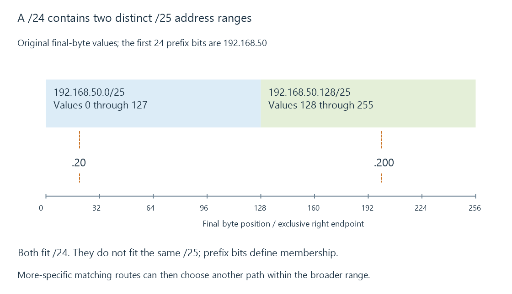

Subnets, CIDR and matching routes
CIDR notation specifies how many leading address bits form a prefix, defining address membership and the specificity used to choose matching routes.
The /24 in 192.168.50.0/24 means that the first twenty-four address bits form the prefix. It does not mean twenty-four devices.
The remaining eight IPv4 bits give 256 address combinations in that prefix. Prefix length is the information missing when someone describes a network only as “192.168.50.”
A /25 boundary cuts the final byte in half
Use the original address 192.168.50.20 with a /25 prefix. The mask is 255.255.255.128.
The first three bytes are entirely prefix bits. In the last byte, only the high bit belongs to the prefix:
address last byte: 20 = 00010100
mask last byte: 128 = 10000000
AND result: 0 = 00000000
prefix: 192.168.50.0/25
There are seven remaining bits, giving 128 addresses from 192.168.50.0 through 192.168.50.127.
Now consider 192.168.50.200. Its final byte has the high bit set, so it belongs to 192.168.50.128/25.
| Prefix being compared | .20 and .200 in the same prefix? |
|---|---|
| 192.168.50.0/24 | Yes |
| The relevant /25 subdivisions | No |
The first three dotted numbers match in both cases. Only the actual prefix tells you whether the local grouping matches.

Prefix membership does not require a .0 ending
A prefix need not end on an eight-bit boundary. The same calculation works for /23, /26 or any other supported length.
For example, a /23 has 512 IPv4 combinations. The aligned 192.168.50.0/23 block includes both the 192.168.50.* and 192.168.51.* ranges.
Writing 192.168.50.20/24 as an interface address retains the host’s .20 value and its prefix length. A normalized network-prefix representation uses 192.168.50.0/24. Those strings describe related objects, not interchangeable host destinations.
Total combinations differ from ordinary host allocation
For IPv4, total combinations are 2^(32 - prefix length):
| Prefix | Total combinations | Interpretation in this example |
|---|---|---|
| /24 | 256 | Ordinary LAN often reserves network/broadcast values |
| /25 | 128 | Same ordinary-LAN reservation convention |
| /31 | 2 | RFC 3021 point-to-point use can use both endpoints |
| /32 | 1 | One address, useful as a host-specific route |
“Subtract two” is therefore not a universal address-count rule.
IPv6 applies the same prefix-bit idea to 128 bits. A /64 contains 2^64 address combinations; IPv4’s ordinary network/broadcast subtraction does not carry over unchanged.
More specific matching routes win first
Use this original reduced route table:
{
"destination": "192.168.50.200",
"routes": [
{"prefix": "0.0.0.0/0", "path": "default", "metric": 10},
{"prefix": "192.168.50.0/24", "path": "lan", "metric": 20},
{"prefix": "192.168.50.128/25", "path": "vpn", "metric": 500}
],
"selectedPath": "vpn"
}
All three prefixes include the destination. The /25 is the longest matching prefix and selects the VPN path in this exercise, despite its larger metric.
Metric comparison is a later choice among otherwise competing route candidates according to the implementation. A low-metric default route does not automatically override every more-specific route.
A mistaken narrow route can therefore capture only some addresses in what looked like one LAN. VPN routing develops that overlap.
Routing and Emby’s classification use prefixes for different decisions
The operating system uses routes to decide how to send traffic. Emby’s LAN Networks setting uses specified ranges in its local/remote policy classification.
An incorrect /16 instead of /24 can include 256 times as many address combinations. That can broaden the application classification without extending the actual network or creating a route.
See Also
- IP addresses and reachable interfaces
- Private, public and special-purpose IP addresses
- VPN routing, overlapping prefixes and split tunneling